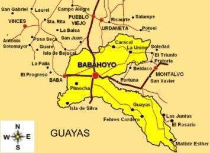

Babahoyo es la capital de la provincia de Los Ríos en Ecuador, ubicada en la región Costa del país, específicamente en la región litoral. Es la segunda ciudad más grande y poblada de la provincia. La ciudad se encuentra en la margen izquierda del río San Pablo, que al unirse con el río Catarama forma el río Babahoyo.